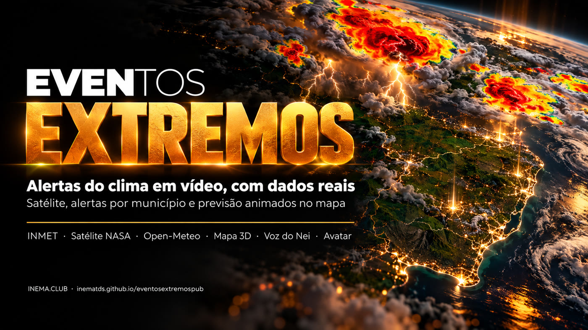
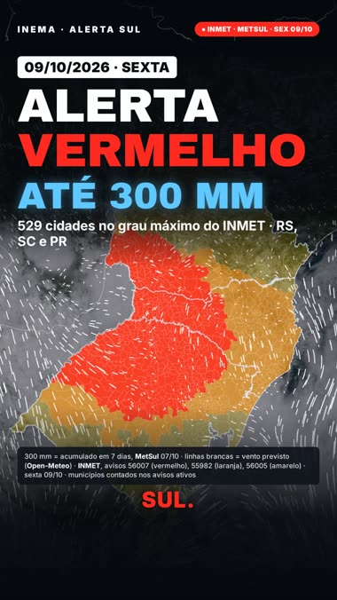
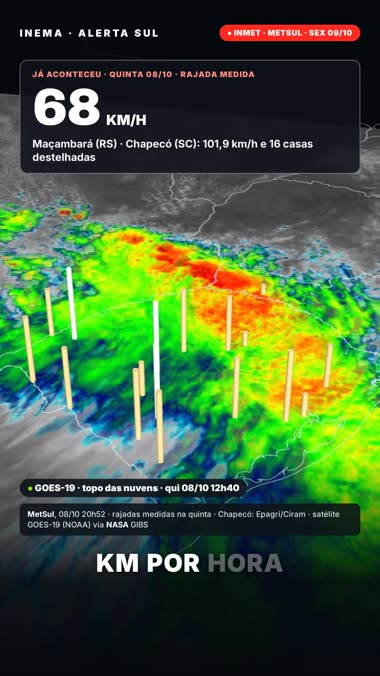
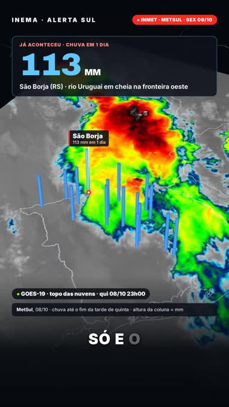
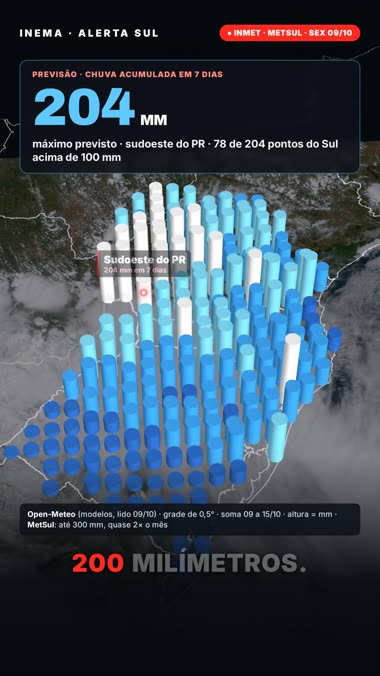

Satélite da NASA, alertas do INMET por município e previsão em grade, animados num mapa 3D, com cada número entrando na hora em que é dito.

O eventosextremospub é um conjunto de scripts que transforma um alerta de tempo severo num vídeo curto vertical (Reels, Shorts, TikTok). Ele baixa os dados de fontes públicas: alertas do INMET com a lista de municípios, imagens do satélite GOES-19 pela NASA e previsão de chuva e vento do Open-Meteo. Depois anima tudo num mapa 3D do Sul do Brasil, com narração e legenda palavra a palavra. É para quem produz conteúdo sobre clima e quer números conferidos, com a fonte na tela, em vez de repostar print de site. Precisa de um computador com placa de vídeo, Node com Playwright, Python, ffmpeg e, para a voz, o projeto cardshorts.
Nasceu de um vídeo de alerta vermelho no Sul (09/10/2026). A pesquisa, o motor do mapa e a montagem viraram scripts para repetir em qualquer evento.
Coleta automática do INMET, da NASA e do Open-Meteo, mais uma lista de fontes conferidas. O que já aconteceu fica separado do que é previsão.
Municípios pintados pelo nível do alerta, timelapse da tempestade no infravermelho, vento correndo, colunas 3D de chuva e rajada, contadores.
O apresentador entra pelo estúdio do HeyGen, no mesmo formato 9:16 do explicavideos, e o mapa acompanha a fala dele.
O mapa é uma página HTML com deck.gl. O Chrome sem janela tira um quadro por vez pela GPU (cerca de 0,1 s por quadro), e o ffmpeg junta com a voz e a trilha.
Cada município colorido pelo aviso do INMET (amarelo, laranja, vermelho), dia a dia.
GOES-19 em cor real como fundo e o infravermelho do topo das nuvens em timelapse, com relógio.
Chuva somada de 7 dias em colunas e vento previsto em partículas animadas.
Abertura com data e o número mais forte, painel com contador, fonte na tela e legenda colorida.
As fontes de dados são gratuitas e não pedem chave. O Open-Meteo grátis limita chamadas por minuto, e o script já espera quando isso acontece.
Node com Playwright, Chrome com Vulkan (placa de vídeo) e ffmpeg.
npm i -g playwright npx playwright install chromium
Municípios do IBGE, estados, países e rios (Natural Earth), baixados uma vez.
geo/baixar.sh python3 motor/prep_geo.py
Narração com voz clonada pelo cardshorts (Chatterbox e Whisper locais) ou pelo avatar do HeyGen.
git clone https://github.com/inematds/cardshorts
Cada vídeo é uma pasta em edicoes/, com a pesquisa, as falas e os dados daquele dia.
Lista cada aviso ativo do INMET com quantos municípios ele pega em cada estado.
git clone https://github.com/inematds/eventosextremospub && cd eventosextremospub E=edicoes/2026-10-09-alerta-sul python3 coleta/inmet_avisos.py $E # 56007 Tempestade Grande Perigo 2026-10-09 00:01 → 23:59 529 municípios
A base em cor real e a sequência do infravermelho para o timelapse. Horas em UTC.
python3 coleta/satelite_gibs.py $E --base 2026-10-08T18:00 \
--de 2026-10-08T12:00 --ate 2026-10-09T05:00 --passo 20
Chuva de 7 dias numa grade de 0,5° e vento hora a hora do dia escolhido.
python3 coleta/openmeteo.py $E --dia 2026-10-09 # prev7: 204 pontos · máx (204, [-53.5, -25.5]) · >100 mm em 78
Em base.md, cada número com fonte e horário, separando o que aconteceu do que é previsão. Em falas.json, o texto falado, curto e direto. A abertura leva a data e o número mais forte que tenha fonte.
[{"id": "f1", "fala": "Alerta vermelho no Sul. Hoje, sexta, quinhentas e vinte e nove cidades..."},
{"id": "f2", "fala": "Rio Grande do Sul, trezentas e quinze..."}]
A narração é conferida por transcrição. O gerar_cena.py amarra cada animação à palavra dita (o contador sobe quando o número é falado).
python3 $E/narrar.py # → narracao.wav + tempos.json python3 $E/gerar_cena.py # → cena.js
Olhe alguns quadros antes do render completo. O quadro 0 tem que abrir cheio.
node motor/render.mjs $E --quadros 0,18,30,47 motor/montar.sh $E $E/video.mp4
Primeira edição: 529 cidades em alerta vermelho no RS, SC e PR, sem avatar. Os 32 primeiros segundos:
| Na tela | Fonte |
|---|---|
| 529 cidades no vermelho (RS 315, SC 128, PR 86) | INMET, aviso 56007 |
| Rajada de 109 km/h em Maçambará, 16 casas destelhadas em Chapecó | MetSul, Epagri/Ciram, 08/10 |
| 113 mm em São Borja num dia | MetSul, 08/10 |
| Tempestade andando de quinta 9h a sexta 1h40 | GOES-19 (NOAA) via NASA GIBS |
| Mapa de sexta a segunda | INMET, avisos 56004, 55993, 55997 |
| Até 204 mm em 7 dias no sudoeste do PR | Open-Meteo |




A primeira edição validou o motor e a coleta. Próximos passos: